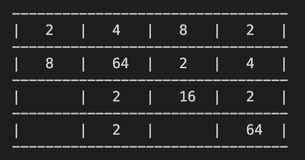
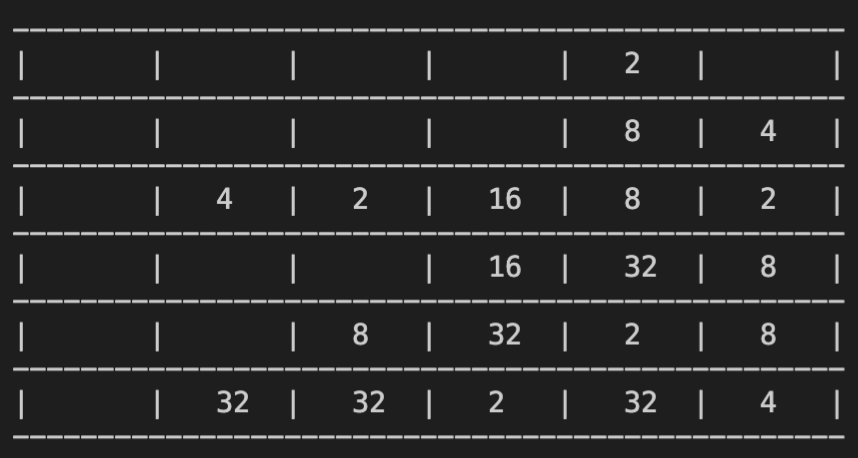

Stage 4 クラスの初期設定と補助機能を実装する
みなさま、ようこそ。2048 のプログラミング第 4 ステージ、今回は Stage 3 で導入した Board クラスのコンストラクタと一部の補助機能を実装します。前回色々とフライングで変数を紹介したのもあったので、ここと Stage 3 を相互に参照しながら見ていただけるといいかと思います。
目次
4-1 コンストラクタ
普通ならコンストラクタはクラスの冒頭に持ってくるべきなんでしょうけれども、この 2048 では初期設定をする際に数字を 2 個ランダムに入れなければなりませんから、前回の 3-3 で先にその機能を insert メソッドとして実装したんでした。覚えていない方は戻って確認してください。ということで Board クラスのコンストラクタを実装します。
2-2 でもわずかに触れましたが、各種パラメーターは変更が効く方がいいので、
- 盤面のサイズ
- 盤面
- アガリの数
- ロガー
- 4 が挿入される確率
を引数に入れてしまいましょう。キーワード引数にしてしまいました。
まずサイズと 4 が出る確率は引数をそのまま使います。基本的には 3-2 で設定した定数をデフォルトに入れます。
さて、ここで調節が必要になってくる引数がいくつかありますが、先にアガリの数に取り掛かりましょう。3-2 で申し上げた通りこのあと扱う盤面表示のサイズの問題で使える数は最大で 5 桁です。なので取りうる値で一番大きい MAX_GOAL と比較して、これを上回るようなことがあれば無理やり MAC_GOAL にしてしまいます。それ以外は引数をそのまま使いましょう。
次に盤面を入力された場合の対処です。最初の方ですでに盤面のサイズは指定しましたから、「もしサイズを満たす配列が board として入力されたら」という条件分岐で対処します。ここで、盤面を引数から受け継ぐときは必ず deepcopy メソッドを使いましょう。Python でリスト型はミュータブルなので、これがないとクラス内の変更が引数として入れただけのリストにまで及んでしまいます。
board として有効なリストが入力されていない場合、つまり引数に盤面を入力しなかった場合は我々の方で盤面を新しく用意してあげる必要があります。盤面のサイズに合わせてまずは全てのマスを EMPTY で埋めつくし、そのあと 2 回に分けて insert メソッドを使って数字を入力します。
4-2 インデックス確認
さて、ここでは InBoard メソッドに取り掛かります。もう解説要らなそうなくらい単純ですが、一応つけておきましょう。「board リストのインデックスがエラーを起こすような値になっていないか」というのを確認する機能です。「規定値の中に入っている」場合であれば True, 「規定値外」の場合は False をリターンします。
4-3 盤面表示
おつぎは print メソッドです。文字通り盤面を表示する機能になります。とりあえずどのような形になるかご覧いただきましょうかね。
我々がこれから作るのはこういう盤面です。早速取り掛かりましょう。
まず他の行と分けて見やすくするため最初と最後には改行を入れます。冒頭の print('\n') がその役割をはたしてくれています。
続いて盤面の内外を仕切る横線です。これは盤面のサイズによって長さが変わるようにしなければいけません。例えば 6 × 6 マスになったらこんな感じに。
「じゃあどうやってコーディングするんだよ」っていうと、self.size に合わせて for 文で後ろにハイフンをつないでいく形になります。ここで print は改行がデフォルトですから、必ず end='' をつけてくださいね。最後まで終わったら print('') でただただ改行するだけ。
ここからは board のマスごとの作業をするつもりで進めていきます。まず最初に row を、その中に col を、という 2 重の for ループ構造にします。各 row のはじめに、盤面の内外を隔てる縦の仕切りを入れます。この時も end=''をお忘れなきよう。というか、ここから先は大体改行しませんので、書くくせをつけてしまってください。各 col のループに入ったら、マスに入っている数字で場合わけします。上の写真でお見せしましたけれども、EMPTY のマスには何も入れません。ですから空白を入れてください。右端の縦線はマスとマスを区切る仕切りになります。一方 board[col][row] の値が EMPTY ではない場合、その数字を具体的に表示しなければなりません。ただ、マスの端っこに申し訳なさそうにおいておくのではなくて、堂々とマスの中央に数字を書きたいじゃないですか。なので center メソッドを使ってあげてください。ここでの文字数は私のものをコピペするのでもいいのですが、実際にご自分で「これくらいだろ」と数字を入れてみて、サイズが合わなかったら調節する、そんな実験的アプローチがいいと思います。一からコーディングするときはそうしますからね。
col ごとの for ループが終了したら、あとは上のマスと下のマスの間の仕切りとなる横棒を入れてあげておしまいです。冒頭でやったように board.size に合わせて長さを変えてください。改行して row のループを抜け、そして全て表示し終わったら最後にもう一度改行しましょう。これ以降に入ってくる文字列と盤面の間隔を開けるためです。
全部終わったら「表示成功」SUCCEED をリターンしてください。いや、別にリターン値使うことないからなんでもいいんですが。
次回予告
今回までで Board クラスの下ごしらえは終了しました。次回はこの 2048 のプログラミングのミソとなる「盤面を動かす機能」を実装します。ですから、ここまででバグがないか必ず確認してください。あとでコードの山に埋もれたバグを探すのイヤでしょ？コードが短いうちに、こういうイヤなことはさっさと終わらせておきなさい。